QA reports · ExacTrac Dynamic Surface
Yearly tracking-performance QA
Yearly QA of ETD tracking performance with the SURF Test Unit on each linac, pads at room temperature and at 32 °C. Each sample is classified against the tolerances below; reports are generated with surf-etds-qa. Personnel appear as role codes only.
Tolerance and criteria
| Metric | Pass | Watch | Action |
|---|---|---|---|
| Translation | ≤ 1 mm | 1–2 mm | > 2 mm |
| Rotation | ≤ 1° | 1–2° | > 2° |
| Pass rate | ≥ 99 % | 95–99 % | < 95 % |
| Watch rate | ≤ 1 % | 1–5 % | – |
| Action rate | 0 % | 0 % | > 0 % |
2026
| Linac | Measured | Result | Pass rate | Report |
|---|---|---|---|---|
| Linac 0 | Pass | 100 % in all 6 DoF | PDF 7 pages · 398 KB | |
| Linac 1 | Pass | 100 % in all 6 DoF | PDF 7 pages · 408 KB | |
| Linac 3 | Pass | 100 % in all 6 DoF | PDF 7 pages · 399 KB | |
| Linac 4 | Pass | 100 % in all 6 DoF | PDF 7 pages · 400 KB |
QA plot pages
Per linac and pad temperature: tracking overview and verification of the kinematic model against kV X-ray sphere detection, as in the appendix of each report.
Linac 0
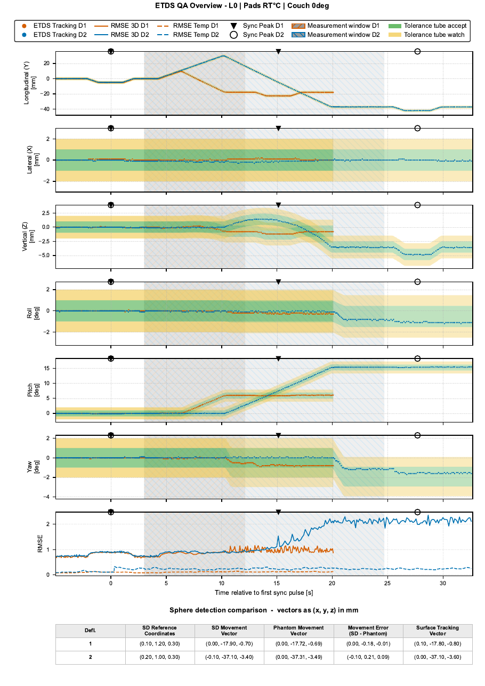
RT · Tracking overview
page 1 of 2 · PDF 180 KBRT · Sphere detection
page 2 of 2 · PDF 180 KB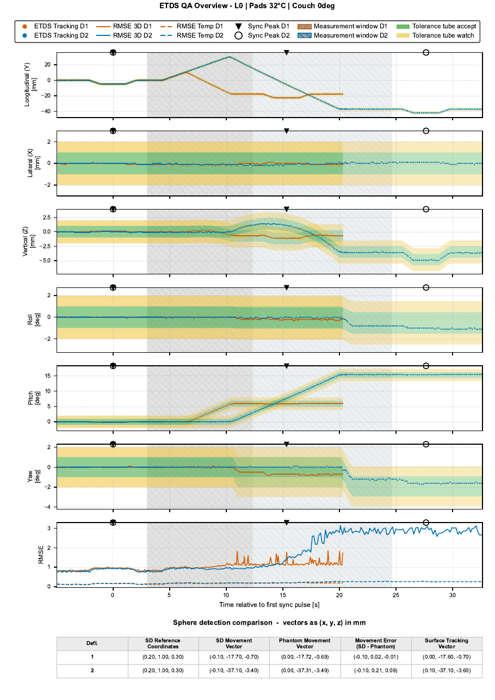
32 °C · Tracking overview
page 1 of 2 · PDF 179 KB32 °C · Sphere detection
page 2 of 2 · PDF 179 KB
Source: surf-etds-qa @ 55065d1 · data/process/L0/single_angle/L0_RT_Couch0_2026-08-10_QA.pdf and L0_32_Couch0_2026-08-10_QA.pdf
Linac 1
RT · Tracking overview
page 1 of 2 · PDF 184 KB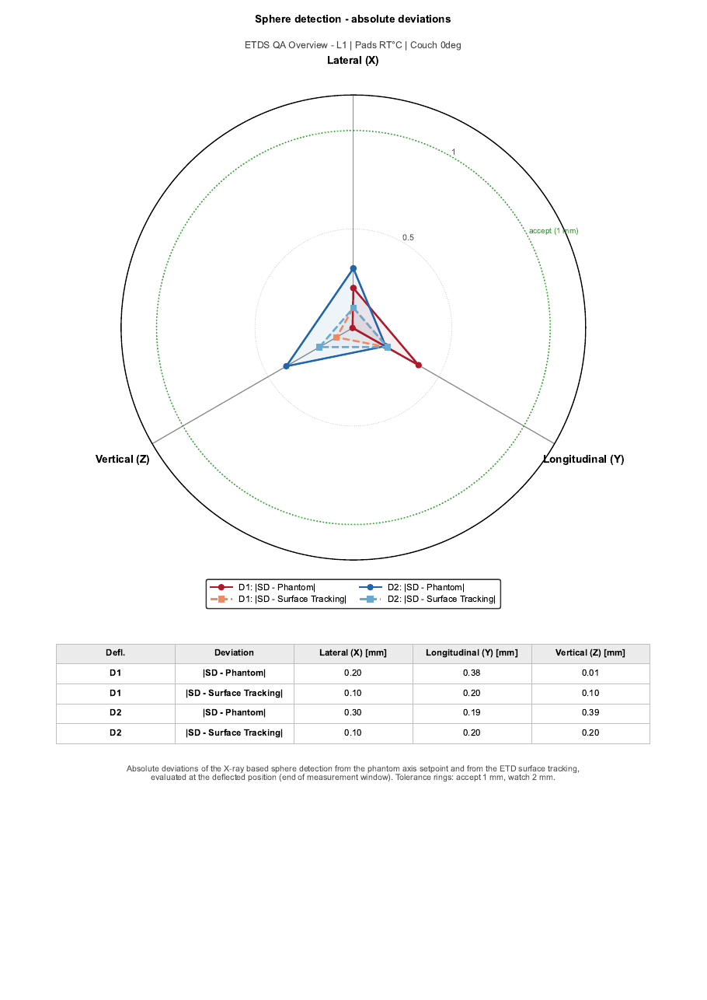
RT · Sphere detection
page 2 of 2 · PDF 184 KB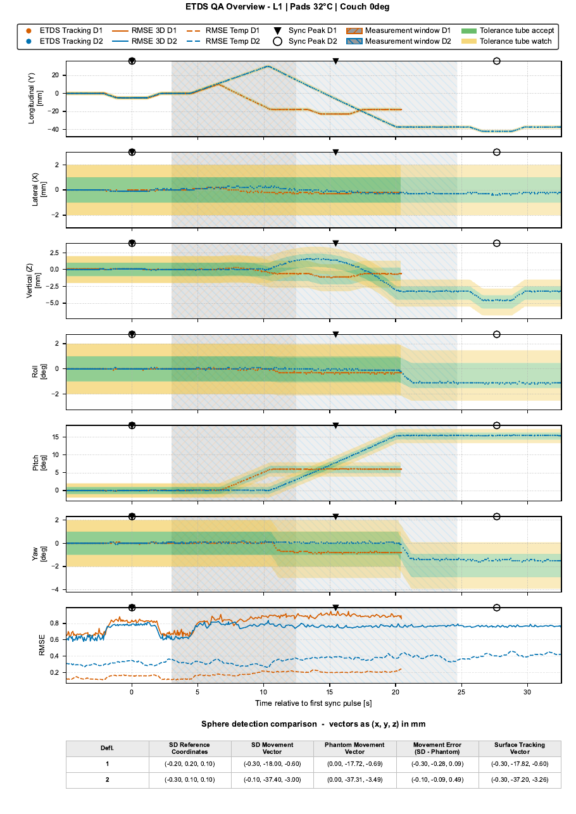
32 °C · Tracking overview
page 1 of 2 · PDF 186 KB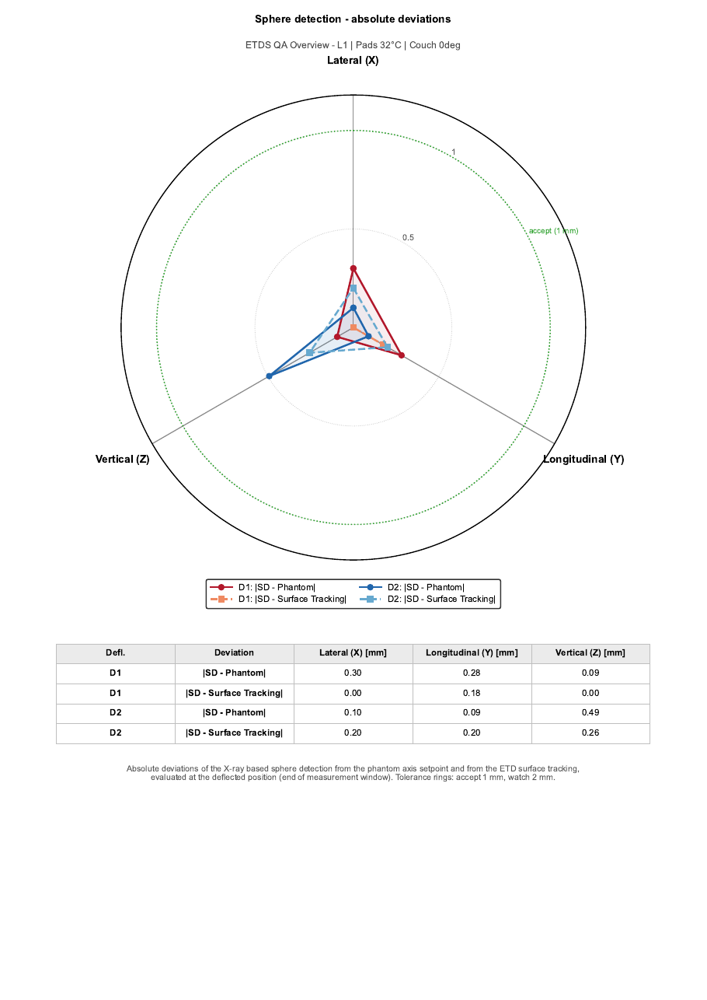
32 °C · Sphere detection
page 2 of 2 · PDF 186 KB
Source: surf-etds-qa @ 55065d1 · data/process/L1/single_angle/L1_RT_Couch0_2026-08-10_QA.pdf and L1_32_Couch0_2026-08-10_QA.pdf
Linac 3
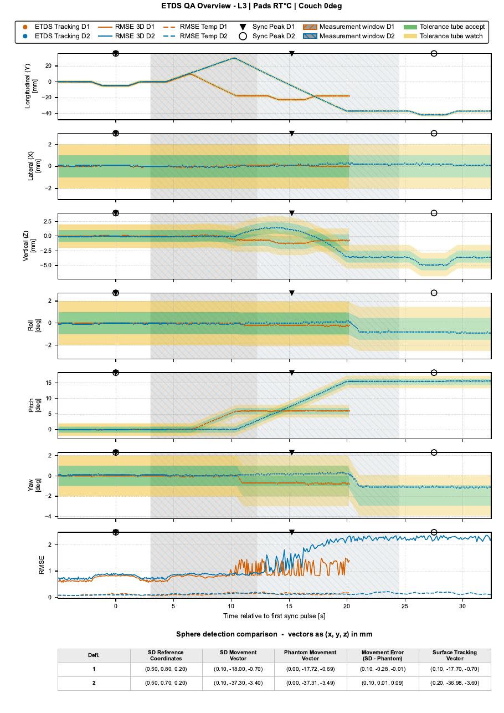
RT · Tracking overview
page 1 of 2 · PDF 180 KB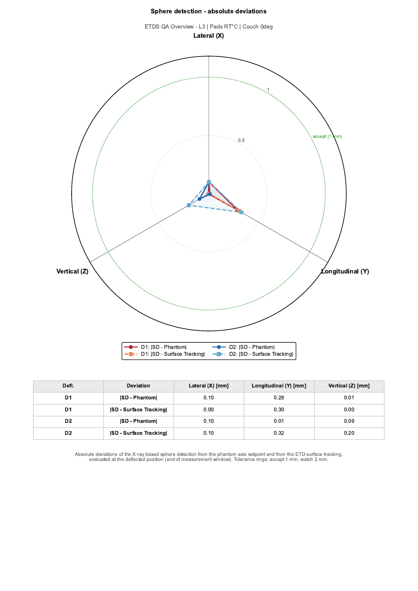
RT · Sphere detection
page 2 of 2 · PDF 180 KB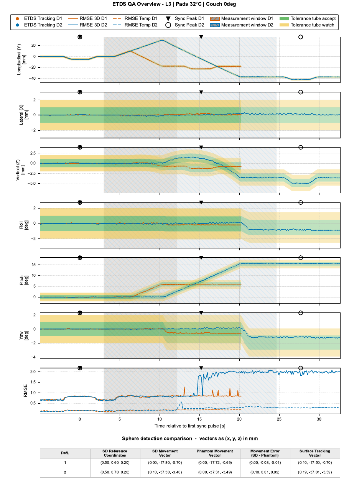
32 °C · Tracking overview
page 1 of 2 · PDF 181 KB32 °C · Sphere detection
page 2 of 2 · PDF 181 KB
Source: surf-etds-qa @ 55065d1 · data/process/L3/single_angle/L3_RT_Couch0_2026-08-10_QA.pdf and L3_32_Couch0_2026-08-10_QA.pdf
Linac 4
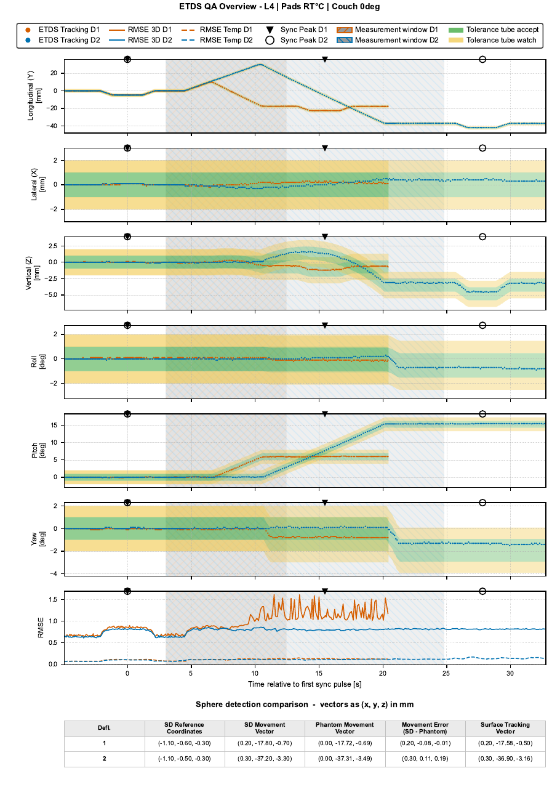
RT · Tracking overview
page 1 of 2 · PDF 179 KBRT · Sphere detection
page 2 of 2 · PDF 179 KB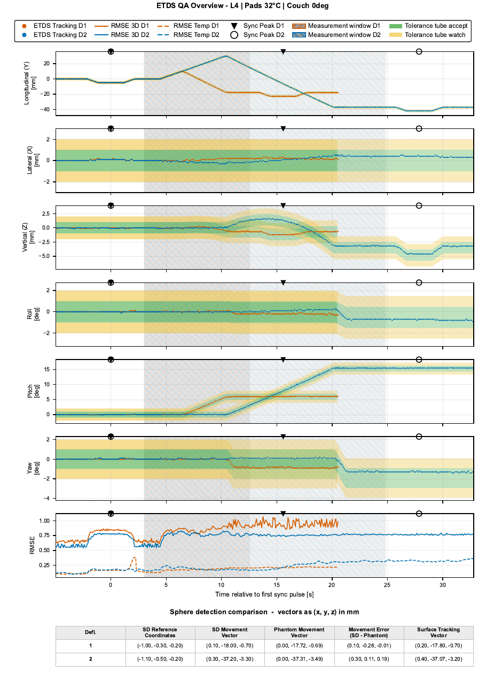
32 °C · Tracking overview
page 1 of 2 · PDF 182 KB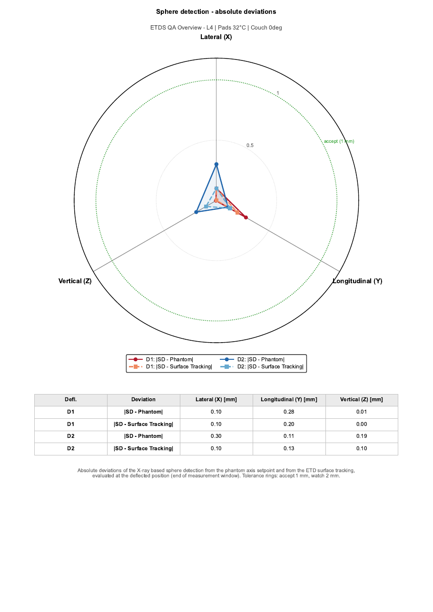
32 °C · Sphere detection
page 2 of 2 · PDF 182 KB
Source: surf-etds-qa @ 55065d1 · data/process/L4/single_angle/L4_RT_Couch0_2026-08-10_QA.pdf and L4_32_Couch0_2026-08-10_QA.pdf